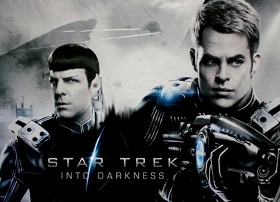

Home
About Me
Tv Shows and Movies
Geek Calendar
|
|
Star Trek: Into Darkness

When the crew of the Enterprise is called back home, they find an unstoppable
force of terror from within their own organization has detonated the fleet and everything it stands for, leaving
our world in a state of crisis. With a personal score to settle, Captain Kirk leads a manhunt to a war-zone world to capture
a one-man weapon of mass destruction named John Harrison. As our heroes are propelled into an epic chess game of life and
death, love will be challenged, friendships will be torn apart, and sacrifices must be made for the only family Kirk has left: his crew.
BACK
|